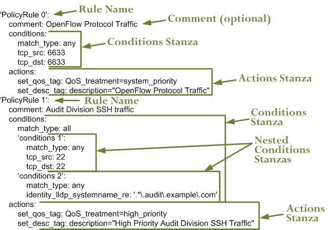

User Guide
Configuration
Configuration files are in the config subdirectory and are written in YAML ("YAML Ain't Markup Language") format (see: http://www.yaml.org/spec/1.2/spec.html)
The general configuration parameters are stored in the file:
config/config.yaml
Traffic Classification Policy
The traffic classification policy (also in YAML) is stored in the file:
config/main_policy.yaml
It is used to control what classifiers are used, in what order and what actions are taken.
The traffic classification policy is based off a root key tc_rules. This root contains a ruleset name (only one ruleset supported at this stage), which in turn contains one or more rules.
Rules are an ordered list (denoted by preceding dash). Each rule contains:
- A comment to describe the purpose of the rule (optional)
- A match type
- A single conditions_list stanza that contains one or more conditions stanzas
- A single actions stanza
Example simple traffic classification policy with a single rule:

A comment must start with the attribute comment: and any single-line string can follow
A match type is one of any or all
A conditions_list stanza contains:
- A match type, consisting of any or all
- One or more conditions as list items (denoted by dash preceding the first item)
- One or more classifiers (see below)
A conditions stanza is a list item in a conditions list and contains:
- A match type, consisting of any or all
- One or more classifiers (see below)
A actions stanza contains one or more attribute/value pairs
Here is a more complex traffic classification policy:

Conditions invoke classifiers. There are four types of classifier supported:
- Static
- Identity
- Payload
- Statistical
Static Classifiers
Static classifiers match on attributes in packet headers, or on environmental attributes
Supported attributes are
| Name | Description | Example(s) |
|---|---|---|
| eth_src | Ethernet source MAC address | eth_src: 08:00:27:4a:2d:41 |
| eth_dst | Ethernet destination MAC address | eth_dst: 08:00:27:4a:2d:42 |
| eth_type |
Ethernet type
Can be in hex (starting with 0x) or decimal |
eth_type: 0x0800
eth_type: 35020 |
| ip_src |
IP source address
Can be a single address, a network with a mask in CIDR notation, or an IP range with two addresses separated by a hyphen Both addresses in a range must be the same type, and the second address must be higher than the first |
ip_src: 192.168.56.12
ip_src: 192.168.56.0/24 ip_src: 192.168.56.12-192.168.56.31 |
| ip_dst |
IP destination address
Can be a single address, a network with a mask in CIDR notation, or an IP range with two addresses separated by a hyphen Both addresses in a range must be the same type, and the second address must be higher than the first |
ip_dst: 192.168.57.40
ip_src: 192.168.57.0/24 ip_src: 192.168.57.36-192.168.78.31 |
| tcp_src | TCP source address | tcp_src: 22 |
| tcp_dst | TCP destination address | tcp_dst: 80 |
More attributes will be added over time.
Identity Classifiers
All identity classifiers are prefixed with 'identity_' LLDP systemname may be matched as a regular expression The match pattern must be contained in single quotes Example: ------- To match system names of *.audit.example.com add this policy condition:
identity_lldp_systemname_re: '.*\.audit\.example\.com'
Statistical Classifiers
All statistical classifiers are prefixed with 'statistical_'
TBD - more here
Payload Classifiers
TBD
QoS Configuration
Quality of Service (QoS) configuration parameters are stored in the file:
qos_policy.yaml
API
REST API Calls (examples to run on local host):
Return the Flow Metadata Table:
curl -X GET http://127.0.0.1:8080/nmeta/flowtable/
or using the supplied script to provide 'pretty' output:
sudo python nmeta/misc/jsonpretty.py http://127.0.0.1:8080/nmeta/flowtable/
Return the Identity NIC Table:
curl -X GET http://127.0.0.1:8080/nmeta/identity/nictable/
Return the Identity System Table:
curl -X GET http://127.0.0.1:8080/nmeta/identity/systemtable/
Logging
nmeta is configured to log to TBD